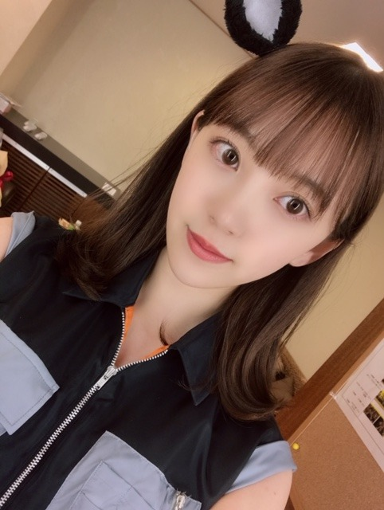
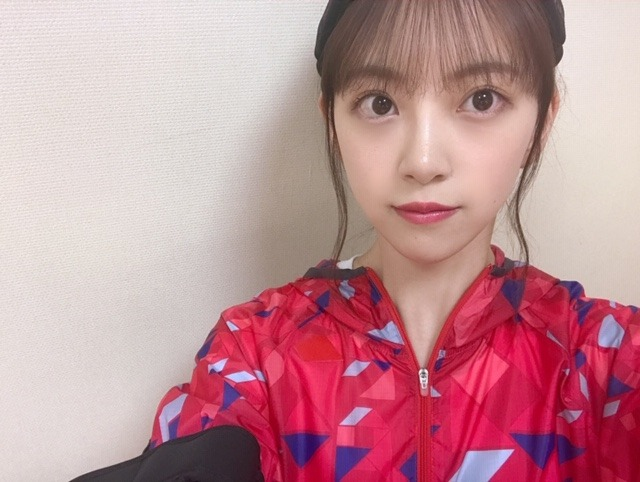

2019/1122Fri理由はないです
こんにちは！
雨ですね〜

マウスの新cmが公開されました！
そしてwebcmにも出てます
見てください✨
工事中見てくださりありがとうございました✨✨

わたしのプロデュースで葉月を
キラキラあざと女子に変身させていただきました❤︎
あの企画で葉月がすごい喜んでくれて
今でもいろいろメイクのこととか聞いてきてくれるのが嬉しいです！
またやれたらいいなぁ
あとこの間掛橋ちゃんが
のぎおびで当てた食事券でご飯一緒に行きたいですって誘ってきてくれて、ご飯行ってきました！
びっくりびっくり
美容、メイクの話からお仕事の話、
少しの時間だったけど4期生と2人でご飯いくのは初めてだったので誘ってくれて嬉しかったです！
ありがとう〜
明日は19:00〜フジテレビ系
逃走中
にでます！
みてね！

では
2019/11/22 15:00
コメント(406)
こんばんは。逃走中見たよ！惜しかったね～。でもとってもかっこよくそして可愛くそんな未央奈が最高でした。お疲れ様でした。
こんばんはお疲れさま☺
逃走中見れんかったから録画してます！
明日楽しみにしてます☺
沙耶香ちゃんのブログに堀ちゃんとご飯を食べ行ったこと書いてあったよ！
嬉しいね✨
良き可愛い妹やん☺
今訂正したけどコメントした時に沙耶香ちゃんの名前変換を間違えてしまい！
やってまった～
しかし、堀ちゃん、沙耶香ちゃん。
綺麗なお姉ちゃん、可愛い妹。
良いな～✨
二人とも頑張り～って応援します☺
頑張ってる人好きなんで✨
ではではまたね✨
ほなね、堀ちゃん☺
逃走中見れんかったから録画してます！
明日楽しみにしてます☺
沙耶香ちゃんのブログに堀ちゃんとご飯を食べ行ったこと書いてあったよ！
嬉しいね✨
良き可愛い妹やん☺
今訂正したけどコメントした時に沙耶香ちゃんの名前変換を間違えてしまい！
やってまった～
しかし、堀ちゃん、沙耶香ちゃん。
綺麗なお姉ちゃん、可愛い妹。
良いな～✨
二人とも頑張り～って応援します☺
頑張ってる人好きなんで✨
ではではまたね✨
ほなね、堀ちゃん☺
ブログ更新ありがとう！
逃走中、見たよ。
もう少しだったね。
やはり、24人もハンターがいると難しいですね。
また、再度チャレンジこと待ってます。
逃走中、見たよ。
もう少しだったね。
やはり、24人もハンターがいると難しいですね。
また、再度チャレンジこと待ってます。
こんばんは、堀ちゃん、お久しぶりのコメントです。最近忙しくて、なかなかコメントできず、ごめんなさい。
先ほど、逃走中見ましたよ。頑張ってましたね。逃走中は、大好きな番組で、よく見てます。堀ちゃんが、出るって知ったときは、びっくりしました。
年末は、忙しいと思いますが、無理せず頑張ってください。
レコード大賞と、紅白出場おめでとうございます。今年は、坂道3グループ出場ということで、ファンとしては、すごく嬉しいです。絶対見ます。いつまでも、この3グループを、応援しています。ずっとずっと大好きです。
僕は、今、「歌手になりたい」と言う、大きな夢があります。芸能スクールに、毎週通ってます。
後悔のない人生を送りたいです。僕も、頑張ります。応援してくれたら嬉しいです。
長くなりました。ごめんなさい。
先ほど、逃走中見ましたよ。頑張ってましたね。逃走中は、大好きな番組で、よく見てます。堀ちゃんが、出るって知ったときは、びっくりしました。
年末は、忙しいと思いますが、無理せず頑張ってください。
レコード大賞と、紅白出場おめでとうございます。今年は、坂道3グループ出場ということで、ファンとしては、すごく嬉しいです。絶対見ます。いつまでも、この3グループを、応援しています。ずっとずっと大好きです。
僕は、今、「歌手になりたい」と言う、大きな夢があります。芸能スクールに、毎週通ってます。
後悔のない人生を送りたいです。僕も、頑張ります。応援してくれたら嬉しいです。
長くなりました。ごめんなさい。
チャァオ～～!☆彡
綺麗なぁ～～～⤴️⤴️
プリンセスみおちゃん、こんばんは～～⤴️⤴️❕❤️❤️❤️❤️❤️笑顔
金曜日にマウスのダンスとメイキング見たよぉ～～⤴️⤴️❕❤️❤️❤️❤️❤️笑顔
やっぱり撮影は、大変ですねぇ～❕❤️❤️❤️❤️❤️笑顔
今日は、おいら朝まで起きていて
その後すぐに寝て、19時まで爆睡して
逃走中を見る為に、目覚まし時計で起きて
みおちゃん出演の逃走中を全部を見たよ～～～⤴️⤴️❕❤️❤️❤️❤️❤️笑顔
みおちゃんおしゃがみして、捕まって残念でしたねぇ～❕❤️❤️❤️❤️❤️笑顔
あれ～～～⤴️⤴️・・・
ひょっとしたら端にいて、覗いていれば
また走れてまだ捕まらなかったかも知れないねぇ～～❕❤️❤️❤️❤️❤️笑顔
楽しかったよ～～❕❤️❤️❤️❤️❤️笑顔
ずっと番組を見ていて
ここで、おいらで得意なぁ～～～⤴️⤴️
悪知恵が働いたよ～～❕笑顔
終了10分前までに
20体放出される前に、チェーンと鍵をかけたかったよ～～～⤴️⤴️❕笑顔
あと至るところに
ワイヤーを仕掛けて、煙幕が充満するトラップを仕掛けたかったよぉ～❕笑顔
おいら～～あとで怒られても、新しいことをやってみたい性格です❕❤️❤️❤️❤️❤️笑
それでは、みおちゃん明日の握手会いっぱい楽しんでねぇ～～⤴️⤴️❕❤️❤️❤️❤️❤️笑顔
またねぇ～❕❤️❤️❤️❤️❤️笑顔
(*^▽^)/★*☆♪❤️❤️❤️
☆大人しい、おすまし！より☆彡
好き。
逃走中みたよー！
ドキドキしたあ、、、笑
女子で最後まで残ってたねーっ！
みおないっぱい映ってて嬉しかったよ〜(*´∀`*)
ドキドキしたあ、、、笑
女子で最後まで残ってたねーっ！
みおないっぱい映ってて嬉しかったよ〜(*´∀`*)
理由はないです
可愛い！
可愛い！
逃走中観たよ！あとちょっとだったね！
でも、あんな長く逃げられたのはすごいことだよね！
未央奈ちゃんが陸上部で、俺も陸上部だったんだけど、お仕事に繋がってよかったね！なんか俺も嬉しいわ
写真集のインスタ更新、たくさんしてくれてありがとう！とてもかわいいね！
でも、あんな長く逃げられたのはすごいことだよね！
未央奈ちゃんが陸上部で、俺も陸上部だったんだけど、お仕事に繋がってよかったね！なんか俺も嬉しいわ
写真集のインスタ更新、たくさんしてくれてありがとう！とてもかわいいね！
未央奈ちゃん初めまして！
長野県のカズでーす！
未央奈ちゃんの岐阜県とは
お隣の事もあってか
とても親近感があり
推しメンになったよー！
昨日の逃走中観たけど
応援してたしあと少しだったねー
最近の未央奈ちゃんは
とても綺麗になって
めっちゃ可愛くなったよー！
モバイルメールも登録したよ
これからよろしくねー
カズ
長野県のカズでーす！
未央奈ちゃんの岐阜県とは
お隣の事もあってか
とても親近感があり
推しメンになったよー！
昨日の逃走中観たけど
応援してたしあと少しだったねー
最近の未央奈ちゃんは
とても綺麗になって
めっちゃ可愛くなったよー！
モバイルメールも登録したよ
これからよろしくねー
カズ
お疲れ様です、堀さん！
逃走中観ました！
そうですね、逃走中を観てよく思うことがあるんですけど、僕も参加してみたいですね(笑)
逃走する側として、そしてこれは多分同じ事を考えた人いると思うんですけど、ハンター側としても、参加してみたいですね
さて、堀さんの参加した逃走中、堀さん、スポーツウェア着ても似合ってますね
なんというか、スマートな感じでとても走れそうな感じが伝わってきましたね。
コーナリングを多用してハンターを撒くという戦法もスマートでしたね
最後の方に残ってたのは、堀さん以外は若い男性ばかりで、しかも普段から体を動かしてるような人もいて、その中に堀さんが残っていたのはかなりいい成績なんじゃないかなと思います
個人的には最後にハンターが大量に追加されて、24体のハンターを相手にしなくて済んだなら堀さんはクリアできていたんじゃないかなと思いましたね
そうですね、なんだか長く語ってしまいましたけど、逃走中お疲れ様でした！健康には気を付けてお過ごしください
逃走中観ました！
そうですね、逃走中を観てよく思うことがあるんですけど、僕も参加してみたいですね(笑)
逃走する側として、そしてこれは多分同じ事を考えた人いると思うんですけど、ハンター側としても、参加してみたいですね
さて、堀さんの参加した逃走中、堀さん、スポーツウェア着ても似合ってますね
なんというか、スマートな感じでとても走れそうな感じが伝わってきましたね。
コーナリングを多用してハンターを撒くという戦法もスマートでしたね
最後の方に残ってたのは、堀さん以外は若い男性ばかりで、しかも普段から体を動かしてるような人もいて、その中に堀さんが残っていたのはかなりいい成績なんじゃないかなと思います
個人的には最後にハンターが大量に追加されて、24体のハンターを相手にしなくて済んだなら堀さんはクリアできていたんじゃないかなと思いましたね
そうですね、なんだか長く語ってしまいましたけど、逃走中お疲れ様でした！健康には気を付けてお過ごしください
水曜のレコメンでさぁちゃんとのご飯の話についてのメールが来そうですねw
逃走中見たよー‼️
惜しかった～❗あと8分まで残ったことがすごい❗
相変わらず可愛かったです。
ベストアーティスト、レコード大賞、紅白頑張ってください❗
惜しかった～❗あと8分まで残ったことがすごい❗
相変わらず可愛かったです。
ベストアーティスト、レコード大賞、紅白頑張ってください❗
大好きな未央奈ちゃんおはよう ✨☀️逃走中リアルタイムでは仕事中のため見られませんでしたが、録画して仕事から帰って来て、すぐに見たよ‼️残り8分ぐらいで捕まり惜しかったね。もうちょっとだったね。未央奈ちゃんの可愛いさにキュンキュンして見てたよ‼️それに賞金獲得できたら、お母さんに体にいいベッドをプレゼントしてあげたいと言っていたので、なんて優しい人なんだろうと、改めて思いました。きっとお母さんはそういう気持ちだけで、凄く嬉しかったと思います。やっぱり未央奈を大好きになってよかったと思います。大好きやおー
未央奈ちゃんおはようございます！頑張ります‼今日から頑張ります‼ありがとうございます！頑張ります‼今日から頑張ります‼
逃走中見ました。こんなに緊張しながら見たのは初めて。2回も逃げ切ったのはお見事！活躍したから次のオファーも来るのでは⁉︎
掛橋さんの憧れの存在なのですね。近くから見ている後輩が憧れるのだから、堀さんの魅力は本物！
先輩後輩の板ばさみで大変な2期ですが、ファンも後輩も応援しています。ファイトー！
掛橋さんの憧れの存在なのですね。近くから見ている後輩が憧れるのだから、堀さんの魅力は本物！
先輩後輩の板ばさみで大変な2期ですが、ファンも後輩も応援しています。ファイトー！
ほりっぴ～、ナンチです♪
逃走中見たよ～
この番組に出れるなんてスゴいしうれしいなぁ
残念だったけどがんばったね
3000円ゲット
はづきのメイク
かけはしちゃんとのご飯
後輩メンバーとの仲良しはうれしい
少しいじりも入っているのが楽しすぎる
逃走中見たよ～
この番組に出れるなんてスゴいしうれしいなぁ
残念だったけどがんばったね
3000円ゲット
はづきのメイク
かけはしちゃんとのご飯
後輩メンバーとの仲良しはうれしい
少しいじりも入っているのが楽しすぎる
堀ちゃん、大好きだよー
未央奈さん逃走中見たよ。赤い服 着てたよね。昨日はお疲れ様 。ずっと未央奈さんが賞金もらえるように頑張ってって願ってましたけど未央奈さんつかまってしまった 。後５分だったのに 。未央奈さん大好きですこれからも色々なテレビ番組に出演して欲しいです。学生役まだ大丈夫だと思うよ。
逃走中、ああ惜しかったもうちょっとだったのに、でも自首せずミッションに挑戦した未央奈はGOOD！
あと最後捕まるにしても陸上部未央奈の快速で逃げて走ってのシーンが見たかったな
つぎは戦闘中で、、、、未央奈のデビューの月の大きさを思い出すなぁ
あと最後捕まるにしても陸上部未央奈の快速で逃げて走ってのシーンが見たかったな
つぎは戦闘中で、、、、未央奈のデビューの月の大きさを思い出すなぁ
今日、らじらー、楽しみです
こんにちは〜
、、今日も、、雨だね〜
、、鞄〜カバンに、、入れていた、、折りたたみ傘が、、ない、、
、、と、、思ったら、、
、、さしていた。。（笑）
、、じゃあ、、またね〜
、、今日も、、雨だね〜
、、鞄〜カバンに、、入れていた、、折りたたみ傘が、、ない、、
、、と、、思ったら、、
、、さしていた。。（笑）
、、じゃあ、、またね〜
逃走中お疲れ様！
ほりぴーこんにちわ雨ですね〜〜雷もオマケに。窓揺れる笑
さすがに今日は家でのんびりしてるー
キーボードをgboardにしたり、AppleMusicのプレイリスト作ったり忙しいんだよ(•ө•)（この顔文字は未央奈の大好きなあすかちゃん。笑←ごめんなさい）
iPhone顔文字種類多いから良き。笑
明日からルーチン通り頑張るぞ(ง'̀-'́)ง がんばみおなー
さすがに今日は家でのんびりしてるー
キーボードをgboardにしたり、AppleMusicのプレイリスト作ったり忙しいんだよ(•ө•)（この顔文字は未央奈の大好きなあすかちゃん。笑←ごめんなさい）
iPhone顔文字種類多いから良き。笑
明日からルーチン通り頑張るぞ(ง'̀-'́)ง がんばみおなー
乃木中の葉月をプロデュース良かった～(^-^)
そして逃走中お疲れ様でした～(^-^ゞ
惜しかったね(^-^;
そして逃走中お疲れ様でした～(^-^ゞ
惜しかったね(^-^;
未央奈ー！
逃走中見たよ！
惜しかったなねーwwカッコよかった✨
未央奈のメイクがウマすぎてビックリ！
そりゃ可愛いわけだww
これからも応援してます！
頑張れ！！！(๑•̀ㅁ•́ฅ✧
逃走中見たよ！
惜しかったなねーwwカッコよかった✨
未央奈のメイクがウマすぎてビックリ！
そりゃ可愛いわけだww
これからも応援してます！
頑張れ！！！(๑•̀ㅁ•́ฅ✧
未央奈ー！
逃走中見たよ！
惜しかったなねーwwカッコよかった✨
未央奈のメイクがウマすぎてビックリ！
そりゃ可愛いわけだww
これからも応援してます！
頑張れ！！！(๑•̀ㅁ•́ฅ✧
逃走中見たよ！
惜しかったなねーwwカッコよかった✨
未央奈のメイクがウマすぎてビックリ！
そりゃ可愛いわけだww
これからも応援してます！
頑張れ！！！(๑•̀ㅁ•́ฅ✧
みおなーかわいいいいいいいい
初めてコメントします！
乃木坂工事中のメイク動画すごく感心しながら見てました！
使ってたメイク道具など具体的に教えて欲しいです！
よろしくお願いします！
乃木坂工事中のメイク動画すごく感心しながら見てました！
使ってたメイク道具など具体的に教えて欲しいです！
よろしくお願いします！
逃走中みたよ！
ダントツでかわいかった♡♡
ダントツでかわいかった♡♡
堀ちゃん可愛い(*´˘`*)だーい好き❣❣
大好きな未央奈ちゃんお疲れ様です。今晩のらじらーサンデーに出演するの、今知りました。いつもはその時間帯は仕事中で、リアルタイムで聞けないけど、今日は休みなので、リアルタイムで聴けるので嬉しいですし、凄く楽しみ でも、YouTubeとかradikoのタイムフリーで何回も聞きますよ‼️今日は体調どうかなあ？また、オリラジさんにまた、いじられるの楽しみ 個人的には、堀未央奈のシネマピックアップが好きだったので、また、やってほしいです。大好きやおー
未央奈～❤️
逃走中観たよ～！
サザエさんの家族探すミッション、
貢献してたし、すごいかっこ良かった～！
結構最後の方まで残っていたし、すごい！
惜しかったね～(>_<)
お疲れさま～！
逃走中観たよ～！
サザエさんの家族探すミッション、
貢献してたし、すごいかっこ良かった～！
結構最後の方まで残っていたし、すごい！
惜しかったね～(>_<)
お疲れさま～！
メイクはやっぱり知ってると知らないでは差がでるからね(*´ω｀*)得意を使ったプロデュース良かったよ。
4期生とも仲良くできて良き良き
4期生とも仲良くできて良き良き
マウスコンピューターのダンス、観ましたよー！
格好良かったです♪
さぁちゃんとのごはん、良かったですね♪☆
格好良かったです♪
さぁちゃんとのごはん、良かったですね♪☆
未央奈ちゃん(^-^*)
メールきたよー
ありがとーねー！
FLASHの
撮影頑張ってー！
絶対見るからねー
あっ！
今度から未央奈って
呼び捨てしてもいいかな？
よろしく！
カズ
メールきたよー
ありがとーねー！
FLASHの
撮影頑張ってー！
絶対見るからねー
あっ！
今度から未央奈って
呼び捨てしてもいいかな？
よろしく！
カズ
逃走中みましたよ～みおなちゃん居なかったら見てない番組だから新鮮でした！
最後の方まで捕まらなかったのに、、、ハラハラドキドキでしたが残念
田中さん忘れてたは笑いました
最後の方まで捕まらなかったのに、、、ハラハラドキドキでしたが残念
田中さん忘れてたは笑いました
みおなちゃん、こんばんは。
逃走中、僕は見たよ。みおなちゃん、惜しかったね。あと８分でしたね。もう少しで逃げ切れたね。みおなちゃん、お疲れ様でした。
みおなちゃん、めっちゃかわいかったよ。
１枚目の写メのみおなちゃん、めっちゃ綺麗で、めっちゃかわいかったよ。
みおなちゃん、体調に気をつけて仕事頑張ってね。
またコメントするね。
逃走中、僕は見たよ。みおなちゃん、惜しかったね。あと８分でしたね。もう少しで逃げ切れたね。みおなちゃん、お疲れ様でした。
みおなちゃん、めっちゃかわいかったよ。
１枚目の写メのみおなちゃん、めっちゃ綺麗で、めっちゃかわいかったよ。
みおなちゃん、体調に気をつけて仕事頑張ってね。
またコメントするね。
未央奈ちゃんブログありがとう！
乃木中見ました！さすが未央奈ちゃんは自分でメイクしてるんですね！腕前がプロ顔負けですね(*^^*)
葉月ちゃんめちゃめちゃ可愛いかったですね！女の人ってやっぱメイクで変われるんですね！美しいです！
あと、逃走中見ました！惜しかったですね(｀_´)ゞ
20体ハンター放出されてなかったら、未央奈ちゃん絶対逃げ切れてたと思います！笑
良ければまた出てください！
年末歌番組いっぱい出るから、めちゃくちゃ嬉しいです！
楽しみにしてますね！
乃木中見ました！さすが未央奈ちゃんは自分でメイクしてるんですね！腕前がプロ顔負けですね(*^^*)
葉月ちゃんめちゃめちゃ可愛いかったですね！女の人ってやっぱメイクで変われるんですね！美しいです！
あと、逃走中見ました！惜しかったですね(｀_´)ゞ
20体ハンター放出されてなかったら、未央奈ちゃん絶対逃げ切れてたと思います！笑
良ければまた出てください！
年末歌番組いっぱい出るから、めちゃくちゃ嬉しいです！
楽しみにしてますね！
かわいい~！！！！
いつもラジオ聞いてます
体に気をつけて、頑張ってください☀️
いつもラジオ聞いてます
体に気をつけて、頑張ってください☀️
葉月が未央奈ちゃんみたいになってた！
メイク道具を見て女子力高くて偉いなぁって感心したよ！
メイクの筆を持ってるのも、マウスでトンカチ持ってるのも
ギャップが良かった
メイク道具を見て女子力高くて偉いなぁって感心したよ！
メイクの筆を持ってるのも、マウスでトンカチ持ってるのも
ギャップが良かった
赤のマウンテンパーカー？の首元が
めちゃくちゃ色っぽい！
ホントに毎日可愛いね！
両親に感謝だね
めちゃくちゃ色っぽい！
ホントに毎日可愛いね！
両親に感謝だね
初コメントです。
昨日の逃走中、見ました。
惜しかったですね。
でもハンターが24体もいたら仕方がないですよー
またリベンジ、楽しみにしてます！
お疲れ様でした！
紅白などなど全部見るので！
頑張ってください！
昨日の逃走中、見ました。
惜しかったですね。
でもハンターが24体もいたら仕方がないですよー
またリベンジ、楽しみにしてます！
お疲れ様でした！
紅白などなど全部見るので！
頑張ってください！
今日はFLASHさんの表紙撮影をしているんですね
初、ソロ表紙なんだね！
発売が楽しみ
初、ソロ表紙なんだね！
発売が楽しみ
こんばんはお疲れさま☺
握手会お疲れさまでした。
今日はいかがでしたか？
録画していた逃走中見たよ✨
堀ちゃん果敢にミッションにチャレンジしていたね✨偉い！
こんないうたら失礼やったらごめんな。
堀ちゃんなかなか足が速いし！
少し驚きました✨
でなんか嬉しかった(笑)
俺子供の頃から足が速くて運動会はいつも主役(笑)(笑)✨
ってどないでもよく、なんか頑張ってる堀ちゃん格好よくて良かったです☺
さすがに24体のハンターはきついな～
でも一般公募の古橋くん逃げ切ったね。
思わず拍手したよ(笑)
一般公募あったなら出たいと思ったのはたぶん俺だけではないと思うな☺
しかし、堀ちゃん果敢にチャレンジ、全力で頑張ってる堀ちゃん素敵でした。
ホンマにお疲れさま。
新たな堀ちゃん見れて嬉しいな✨
ではではまたね。
体調気をつけてくださいね✨
ほなね、堀ちゃん☺
握手会お疲れさまでした。
今日はいかがでしたか？
録画していた逃走中見たよ✨
堀ちゃん果敢にミッションにチャレンジしていたね✨偉い！
こんないうたら失礼やったらごめんな。
堀ちゃんなかなか足が速いし！
少し驚きました✨
でなんか嬉しかった(笑)
俺子供の頃から足が速くて運動会はいつも主役(笑)(笑)✨
ってどないでもよく、なんか頑張ってる堀ちゃん格好よくて良かったです☺
さすがに24体のハンターはきついな～
でも一般公募の古橋くん逃げ切ったね。
思わず拍手したよ(笑)
一般公募あったなら出たいと思ったのはたぶん俺だけではないと思うな☺
しかし、堀ちゃん果敢にチャレンジ、全力で頑張ってる堀ちゃん素敵でした。
ホンマにお疲れさま。
新たな堀ちゃん見れて嬉しいな✨
ではではまたね。
体調気をつけてくださいね✨
ほなね、堀ちゃん☺
逃走中観たよ〜
最後捕まるのは残念だった…赤のパーカーの似合ってる！
mouse cmのダンス美しくて鳥肌立ちました(*'▽'*)
テスト頑張ります！
紅白絶対観るね〜
最後捕まるのは残念だった…赤のパーカーの似合ってる！
mouse cmのダンス美しくて鳥肌立ちました(*'▽'*)
テスト頑張ります！
紅白絶対観るね〜
逃走中、女性アイドルとしては大健闘でしたね。
運が良ければ逃げ切れたかも知れませんが、
まぁ運は別のところで使いましょう。
運が良ければ逃げ切れたかも知れませんが、
まぁ運は別のところで使いましょう。
みおな
今日もお疲れ様です
コメントするの少し久々な気がします
マウスの新CM観ました
シックな雰囲気とキレッキレのダンスでカッコ良かったです
可愛いさは健在だったけど、美しさもありました（ナレーターの説明が入ってこない笑）
乃木坂加入当時の本当に同い年かと思うくらい幼い顔してたのに、今ではすっかり大人な感じになって、成長がすごく感じられるCMでした
これからも頑張って下さい
乃木中のやつも観ました
葉月ちゃんにメイクしてる時も、お姉さんという感じがあっていい先輩感が出てました
掛橋ちゃんもブログに書いてたけど、一緒にご飯行けて嬉しかったって書いてありました
これからも仲良く頑張って下さい
逃走中も観ました
何度か逃げ切れてたし、10分切っても捕まらないのは、すごいと思いました
24体もハンターいたら逃げるより隠れるしかないよね笑（見つかったら連鎖的に見つかって終わりな気がします）
20体増えなければ、逃げ切れたかもしれないけど、お疲れ様でした
お母さんへのベッドは、みおなのポケットマネーで笑
また歌謡祭とかで見られるのを楽しみにしてます
体調に気をつけて頑張って下さい！
ありがとうございました
今日もお疲れ様です
コメントするの少し久々な気がします
マウスの新CM観ました
シックな雰囲気とキレッキレのダンスでカッコ良かったです
可愛いさは健在だったけど、美しさもありました（ナレーターの説明が入ってこない笑）
乃木坂加入当時の本当に同い年かと思うくらい幼い顔してたのに、今ではすっかり大人な感じになって、成長がすごく感じられるCMでした
これからも頑張って下さい
乃木中のやつも観ました
葉月ちゃんにメイクしてる時も、お姉さんという感じがあっていい先輩感が出てました
掛橋ちゃんもブログに書いてたけど、一緒にご飯行けて嬉しかったって書いてありました
これからも仲良く頑張って下さい
逃走中も観ました
何度か逃げ切れてたし、10分切っても捕まらないのは、すごいと思いました
24体もハンターいたら逃げるより隠れるしかないよね笑（見つかったら連鎖的に見つかって終わりな気がします）
20体増えなければ、逃げ切れたかもしれないけど、お疲れ様でした
お母さんへのベッドは、みおなのポケットマネーで笑
また歌謡祭とかで見られるのを楽しみにしてます
体調に気をつけて頑張って下さい！
ありがとうございました
堀ちゃん、お美しい！


１日お疲れ様！！
逃走中観たよ！
あと少しで逃げ切れたのにほしかったね～！
だけど堀ちゃんの頑張りが観れて良かった
途中で前髪がなくなっていたのはそういうことね
755で理解した
また出れるといいね～
ニベアで色白になっていたのね
ﾌﾑﾌﾑ私も真似しよ
明日もお仕事頑張ってね！
ではまた(*´∇｀*)